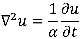
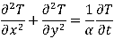
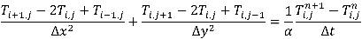

Click on the square to randomize the plate's temperature.
This is a program in JavaScript that assigns each pixel in a square HTML5 canvas element a random temperature and then simulates the flow of heat across the plate. the heat equation has many applications and it is always good to know how to use it.
The following equation describes the dynamics of transitory heat flow in any system without internal heat generation. u in this case would be temperature but really it could be any type of concentration (germs, water, alleles... see diffusion equation). α is a constant that depends on a material's properties.
For a two dimensional plate in Cartesian coordinates the equation would take the following form:
This equation can be solved to obtain a function that returns a temperature for a specific time and XY place given the appropriate boundary conditions. Nevertheless, solving this equation is more of a (very complex) math problem. Using numerical methods and computers it is possible to find approximate solutions. The system can be discretized by dividing the plate into nodes and the time into steps. A finer resolution gives more exact solutions. The discretized equation would look like this:
In this case Δx, Δy, α = 1. According to Yunus A. Çengel in his book Heat and Mass Transfer for the method to be stable then Δt < .25. Solving for the node temperature and associating the temperatures to a two dimensional array the equations takes the form of the following code:
T[i][j] = (T[i + 1][j] + T[i - 1][j] + T[i][j + 1] + T[i][j - 1]) * dt + (1 - 4 * dt) * T[i][j]
Every element of the array is initially given a random temperature, setting the initial conditions. After this the equation above is iterated in steps and for each element of the array. A pixel is drawn with a color corresponding to an element's position and temperature. If an element is at the edge of the square then there are two things the program can do: treat the square as insulated meaning that the edge is a "mirror" or treat the square as a torus. This app uses torus.